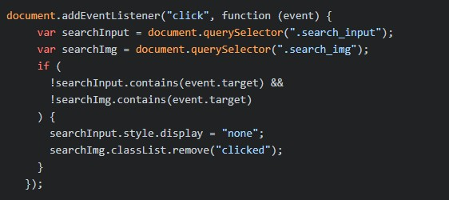

Hi There!
EN
Hi, I'm
Maksym Ivashchenko
Frontend developer
Designer (Web, UI/UX, 3D, Interior)
// web development A Software Developer having an experience of building Web and Mobile applications with HTML / CSS / JavaScript / React Native. // clean web & ui/ux design Experience and sense of taste in Design. I work professionally in Figma / Adobe Photoshop / Illustrator / XD / Autodesk 3ds Max.


-
Aperture Studios
Photographer & Filmmaker This is the basic layout of a photographer's website. Smooth animation has been made, suggestive pop-up elements focusing attention on the main details. The black minimalistic design of the site makes it possible to focus on the photo and penetrate into the essence. This site is a portfolio of a photographer and
videographer called Aperture Studios.
This site is a portfolio of a photographer and
videographer called Aperture Studios.
1. The main page of the site contains information about the photographer and videographer, as well as a description of their work.
2. There is a menu in the site's header that allows you to navigate to various sections such as "Business areas", "Featured images", "Gear cage", and "Contact".
3. The site also offers the option to download a template.
4. The "What we do" section features the areas in which the photographer and videographer specialize, such as Product Photography, Architecture Photography, Drone Photography, and Wildlife Photography.
5. The site also contains sections with photo demonstrations, information about the equipment used, information about past clients, and the ability to contact the photographer and videographer.
6. The basement of the site has a logo, navigation links, a newsletter subscription form, and information about the site's author.
JavaScriptThe script contains several functions that perform different actions when scrolling the page and resizing the browser window.
1. The "Header bg parallax" function is responsible for creating a parallax effect for the header background. It selects all elements with class "main-container__bg" and when scrolling the page, it changes their background position depending on the speed specified in the "data-speed" attribute.
2. The "Header on top" function is responsible for changing the position of the header as the page scrolls. If the scroll reaches or exceeds 100 pixels, the header is moved up and the animation is removed. If the scroll is less than 100 pixels, the header returns to its original position and the animation is enabled. This only happens when the screen width is greater than 768 pixels.
3. The "AOS OFF MOBILE" function is responsible for disabling animation on mobile devices. It selects all elements with the "data-aos" attribute and when the browser window is resized, it removes this attribute for elements with a screen width less than or equal to 768 pixels. When the screen width is greater than 768 pixels, the "data-aos", "data-aos-offset" and "data-aos-easing" attributes are restored for elements. Thus, this script is used to create a parallax effect for the header background, change the position of the header when scrolling and disable animation on mobile devices.
git js... -
Bright Light
Singer / Dj / Music Maker The site includes various sections, news, information about Bright Lights (singer and producer), the latest tracks, a gallery, and information about upcoming events. Each section has its own unique elements, such as images, text description, and links. Overall, the portfolio site is designed to showcase Bright Lights' work and accomplishments, as well as provide information and entertainment for site visitors. This site is the music website of an artist
called "Bright Lights".
This site is the music website of an artist
called "Bright Lights".
1. The site has the following structure: The header contains the artist's logo, the main menu with links to the sections of the site (Home, News, About us, Music, Gallery, Tours), and a block with a player for listening to music.
2. The main content (main) of the site is divided into several blocks: - News block (News), which contains cards with news and the possibility to read the details. - "About Us" block with a description of the artist and his achievements. - A block with a quote and a link to an interview with the artist. - Latest tracks block, including track cover, player and playlist with links to tracks. - A block with a gallery containing images of the artist. - A block with upcoming events and tours, including cards with event information and links to purchase tickets.
3. The site has a responsive design and offers easy navigation through the sections.
JavaScriptThis site contains the following JavaScript elements:
1. initialize the AOS (Animate On Scroll) library by calling the AOS.init() function. This library allows you to add animation to elements as the page scrolls.
2. Customizing the functionality of the mobile player. Using JavaScript, set the audio play and pause functions, display time and audio progress on the mobile player.
2. Customizing the functionality of the mobile player. Using JavaScript, set the audio play and pause functions, display time and audio progress on the mobile player.
3. Realization of page scrolling functionality when clicking on menu items. When clicking on a menu item, the page scrolls smoothly to the corresponding section.
4. Realization of parallax effect for the site header background. When scrolling the page, the header background moves at a different speed than the page scroll speed, creating a depth effect.
5. Realization of smooth scrolling to the header section on page load. When the page loads, the page scrolls smoothly to the header section so that the user can immediately see the page content.
6. Realization of the functionality of opening and closing the container with the news description when clicking on the "Read more..." button. When clicking on the "Read more..." button, the container with the news description is opened, and when clicking again, it is closed.
7. Realization of the audio player functionality. An audio player with the functions of playback control, volume control and audio progress display was created.
8. Realization of pop-up window functionality. Clicking on the text icon opens a pop-up window with additional information, which can be closed by clicking outside the window.
9. Playing videos using YouTube API and displaying videos in a modal window. Clicking on a video opens a modal window that plays the video using the YouTube API.
10. Implementing an image gallery with the ability to enlarge an image when clicked. When you click on an image in the gallery, it is enlarged for a more detailed view.
11. Using Swiper to create a slider with the ability to navigate and switch images. Swiper allows you to create adaptive sliders with various customizations and transition effects.
12. Adding a shadow effect to a Swiper slider when the checkbox is activated. When the checkbox is activated, a shadow effect is added to the Swiper slider, giving it extra depth.
13. Using Splide to create an event slider with adaptive display on different devices. Splide allows you to create event sliders that can be adapted for different devices and screen resolutions.
14. Various features to control the visibility and behavior of page elements. These functions allow you to control the display and behavior of elements based on user actions or page state.
This is just a brief description of the JavaScript elements on this site.
git js... -
Taster
Platform and quick start restaurateurs This site is a web page about a company or organization related to the restaurant field. The site contains a header with logo and navigation menu, main content with sections such as "Header", "Discover", "Statistics" and "More", and a footer with additional links and information about the author of the site. The page has a responsive design and offers easy navigation through the sections. This site is a web page related to the
restaurant industry.
This site is a web page related to the
restaurant industry.
1. It contains a header with logo and navigation menu, main content with sections such as "Header", "Discover", "Statistics" and "More", and a footer with additional links.
2. The site offers information about the company, invites restaurateurs to join the Taster platform and launch virtual restaurants from their existing kitchen.
3. It also emphasizes that Taster is a collection of online restaurants that are dedicated to providing the best in street food.
4. The website has a responsive design and offers easy to navigate sections.
 JavaScript
JavaScript
The code performs the following functions:
1. AOS.init(); - initializes the AOS (Animate On Scroll) library, which adds animation to elements as the page scrolls.
2. Burger menu: - Clicking on an element with class "mobile div" adds/removes "active", "open" and "show" class from corresponding elements with classes "mobileDiv", "mobileNav" and "mobileNavUl". This allows the burger menu to be displayed and hidden when clicked. - When clicking outside the area with class "mobile", the classes "active", "open" and "show" of elements with classes "mobileDiv", "mobileNav" and "mobileNavUl" are removed. This allows the burger menu to be hidden when clicked outside its area. - For each list item with the "mobile ul li" class, an animation delay is set using the "animationDelay" property.
3. accordion: - Gets all elements with class "accordion" and adds a "click" event handler for each element. - When an accordion element is clicked, it toggles the "active" class and changes the display style of the next element (panel). If the display style is set as "flex", it changes to "none", and vice versa. This code is responsible for the burger menu and accordion functionality on the web page.
git js... -
Farmzi
Horticulture & Agriculture This site is a web page with information about a company offering gardening and landscaping services. The site has sections including company information, services, team, clients, latest news and contact details.
 This site is a web-based platform dedicated to
gardening and landscape design.
This site is a web-based platform dedicated to
gardening and landscape design.
1. There is a bright and attractive hero block on the main page of the site that draws the attention of visitors and introduces them to the gardening atmosphere. Here you can find inspiring quotes and an invitation to explore all the services the company offers.
2. On the “About Us” page, you can find detailed information about the company itself, its experience and approach to gardening. It also includes photos and descriptions of key team members so visitors can get acquainted with the experts working for the company.
3. The Services section offers a detailed description of the various types of services provided by the company. Here you can find information about planting flowers, growing trees, removing weeds and watering the garden. Each service comes with photos and a description of the benefits.
4. The company also offers a video intro that can be viewed on the website. This allows visitors to see the company's work and start making their dreams of having their own garden come true.
5. The site also has “Team” and “Happy Customers” sections, which provide photos and reviews about the company's work. This allows visitors to learn about the professionalism and quality of the services provided.
6. The site also has a “Latest News” section that features useful gardening and landscaping tips and tricks. Here you can find articles about proper garden care, plant selection and other interesting topics.
7. At the bottom of the page is a footer with the company's contact information and a link to the site's developer. It also includes links to the company's social media, where visitors can learn more and get in touch with the team.
8. Overall, this site offers a complete platform for those interested in gardening and landscape design. It provides the information, inspiration and services you need to create and maintain a beautiful garden.
 JavaScript
JavaScript
JavaScript code performs the following actions:
1. When you click on elements inside a block with class "mobile div", the following happens: Elements with class "mobile div" toggle class "active". Elements with class "mobile nav" switch class "open". Elements with class "mobile nav ul" switch class "show".
2. The following happens in the loop: For each li element inside the list with class "mobile ul", a CSS style with a delay animation is applied. The delay animation is calculated based on the element index.
3. Next comes the code for the accordion: All elements with class "accordion" are obtained. A "click" event handler is added for each element. When an element is clicked, the "active" class is toggled and the next element (panel) is displayed/hidden.
This code uses the jQuery library to work with DOM elements and the Swiper plugin to create the slider. It also contains code to create an accordion without using jQuery.
git js... -
Ozart
UX/UI Designer portfolio This site is a portfolio of a UX/UI designer, product designer, content creator and creative director. The site contains sections that present information about the designer, her skills and experience. The homepage has a welcome area with a photo of the designer and a brief description of her skills. The site is described as follows:
The site is described as follows:1. Site header: Logo, which is a link to the home page. A search button, which when clicked opens a field for entering a query. A navigation menu that contains "Home", "About me", "Presents" and "Contacts" sections.
2. The main part of the site: A header area containing a welcome and information about the designer. A photo of the designer.
3. Social Media: Icons to access the designer's social media profiles.
4. About me section: A short video about the designer.
5. "What I Do" section: A block describing the designer's three areas of expertise: 'Ui & UX Design', 'Graphic Design' and 'Web Development'.
6. Portfolio: Filters to select a category of work. Gallery with images of projects.
7. Client Testimonial section: Client testimonial about the designer's work.
8. Get in touch section: A headline and description encouraging to get in touch with the designer. A "Contact" button to go to the contact form. Designer's Social Media.
9. "My Blog" section: Section Title. Blog post cards with date, number of comments, likes, author and brief description.
10. Footer: Information about the designer and how to contact the designer. Copyright and link to the template author. Designer's Social Media.
 JavaScript
JavaScript
Code that performs various actions on a web page. Here is its explanation:
1. `$(".popup").css("display", "none");` - Sets the initial value of the CSS `display` property for an element with class "popup" as "none", which hides it initially.
2. Burger menu button click handler: Adds a burger-menu button click event handler. When the button is clicked, toggles the "active" class for button and menu, which allows animating the display and hiding of the menu.
3. Handler for clicking on an image in the portfolio gallery: Adds an image click handler inside an element with class "portfolio-gallery-box". When clicking on an image, gets its source path and sets it to the `src` attribute of the image inside the element with class "popup". Then, using the `fadeIn()` method, smoothly displays the element with the class "popup".

4. handler for clicking on the close button of the popup: $(".close").click(function () { $(".popup").fadeOut(); }); Adds a click handler to an element with class "close". When the close button is clicked, using the `fadeOut()` method, smoothly hides the element with class "popup".
5. Handler for clicking on the area around the popup to close: $(".popup-wrap").click(function () { $(".popup").fadeOut(); }); Adds a click handler to an element with the class "popup-wrap". When clicking on the area around the popup, using the `fadeOut()` method, smoothly hides the element with class "popup".
6. Function `toggleSearchInput()` to toggle the display of the search field: Gets references to elements with the classes "search_input" and "search_img". When the function is called, checks the current value of the CSS `display` property for the search field. If it is equal to "block", it hides the search field and removes the "clicked" class from the element with the "search_img" class. If the value is not equal to "block", it displays the search box and adds the "clicked" class to the element with the "search_img" class.
7. A click handler outside the search field to hide it: Adds a click handler to the document. When clicked outside the search field and element with class "search_img", hides the search field and removes the "clicked" class from the element with class "search_img".
This code is responsible for the functionality of the popup, burger menu, portfolio gallery and search field on the web page.
git js...
Maksym Ivashchenko
Frontend developer
Designer
I am a passionate web developer with experience in JavaScript, Css, Html and React.js development. A designer with a very subtle taste and appreciation for detail. I constantly strive for excellence and aim to achieve high results in my work. I have a strong understanding of user experience and can create attractive and intuitive designs. My skills include building responsive websites, search engine optimization. I also have experience working in a team and can collaborate effectively with other developers and designers. I am always ready for new challenges and strive to constantly learn and develop my skills. I am confident that my knowledge and experience will allow me to successfully perform the tasks of a web developer and designer.


Skills
I use in frontend:
- JavaScript
- CSS
- HTML
- React JS / Native
I use in design:
- Figma
- Adobe Photoshop
- Adobe Illustrator
- Adobe XD
- Autodesk 3ds Max
- I make adaptive and cross-browser layouts, try to use the best technologies and always learn new ones.
- Actively interested in AI and use it widely in projects.
- Speak English intermediately, reading / listening / writing.
- Development of corporate identity, logo.
- Strong knowledge of graphics programs.
- Creativity, sense of color and style.
- Actively follow design trends.
- Accuracy, diligence, attention to detail.
Education
2005-2011Open International University of Human Development "Ukraine".
2010-2011Interregional Academy of Business and Law named after N. Kruchinina Certificate given for having successfully completed the full course of program “Web design”.
Experience
Freelance Web Developer (May – October 2023)Developed an audio player, player design using Adobe Photoshop / Figma / React Native
Developed websites using Html / Css / JavaScript and JS library.